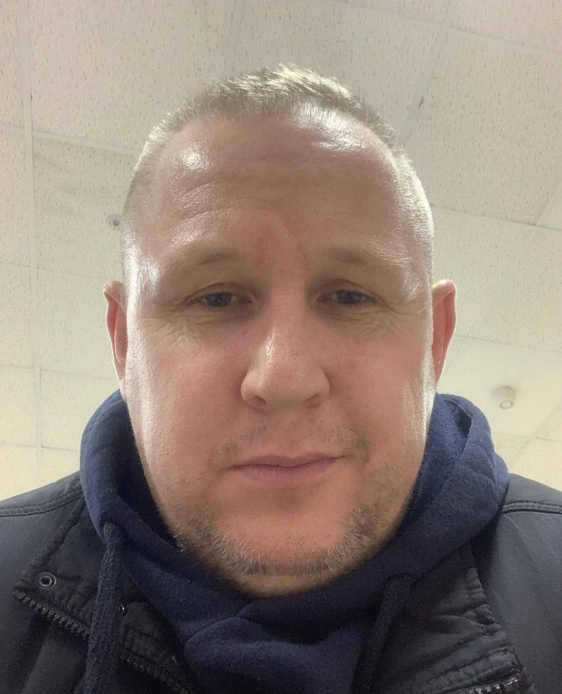

Despre tatăl

Tatăl meu, Cotvitchi Andrei, lucrează ca dispecerat în Moscova, Rusia, într-o carieră dedicată și ambițioasă. Deși este departe de casă, se străduiește să ne ofere oportunități mai bune și suntem mândri de angajamentul său. Păstrăm legătura prin mijloace moderne de comunicare și ne inspiră în fiecare zi cu devotamentul și pasiunea sa pentru muncă. Suntem norocoși să avem un astfel de model de determinare și așteptăm cu nerăbdare să împărtășim amintiri prețioase și să ne sprijinim reciproc în evoluția noastră.